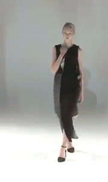
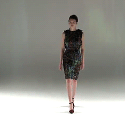

Hussein Chalayan
Diseñador
Hussein Chalayan, uno de los diseñadores más relevantes e interesantes de los últimos veinte años, nombra entre sus referencias a arquitectos como Jean Nouvel o Zaha Hadid. No es de extrañar teniendo en cuenta sus prendas y su intención, siendo un niño, de ser arquitecto. Lo que cuesta más es imaginar que uno de los hombres más visionarios y transgresores de la moda de los últimos tiempos, responsable de algunos de los estilismos más memorables de la celebrada Lady Gaga, sea un hombre tan humilde. Humilde pero también inacabablemente inquieto. Nacido en Chipre aunque formado en Londres, se graduó en Saint Martins en 1993 y desde entonces, Hussein Chalayan no ha parado de labrar su fama de diseñador conceptual y con la mirada puesta en el futuro. En un momento en el que la máxima preocupación es producir y vender el mayor número de prendas posibles, sus diseños hablan de identidad, migración o choques culturales.

En el año 2001, abandonó la Fashion Week londinense y pasó a desfilar en París. Este cambio también supuso una simplificación de su puesta en escena y de sus propias creaciones, difíciles de trasladar de la pasarela a la calle. Según sus propias palabras: “Son sólo prototipos, y para venderlos habría que buscar un soporte tecnológico indeleble. De momento, sería algo impensable”. A lo que añade, “mi reto es mantener el aspecto personal y, a la vez, llegar a un mayor número de gente, a pesar del estúpido término vanguardista al que muchos se empeñan en asociarme”.
Hombre de ideas -como él mismo se define-, realizador audiovisual y gran amante de la tecnología, sus creaciones están más cerca del arte contemporáneo que de las grandes cadenas de producción de moda, no en vano, representó a Turquía como artista invitado en la Bienal de Venecia con un vídeo protagonizado por la actriz Tilda Swinton. “La tecnología es el único terreno en el que no todo está dicho y hecho”, asegura.
En el año 2015, se anuncia su fichaje por parte de la firma Vionnet.
 